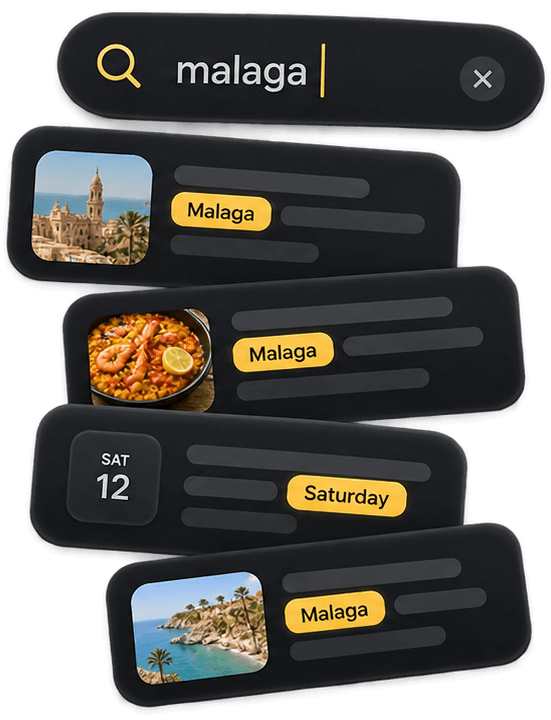
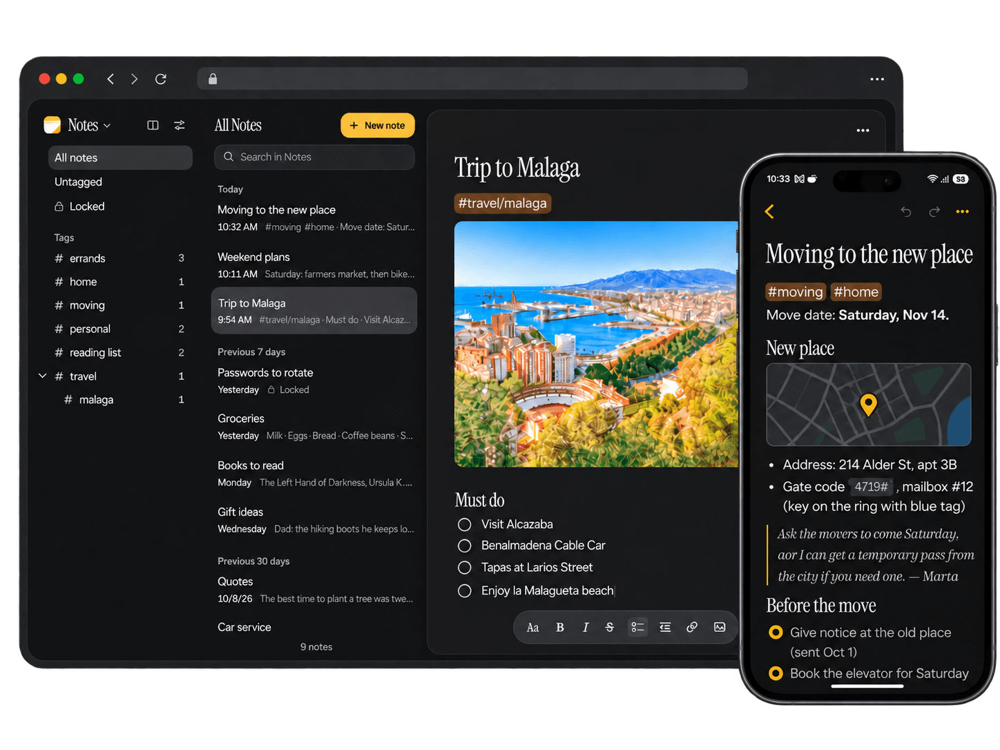
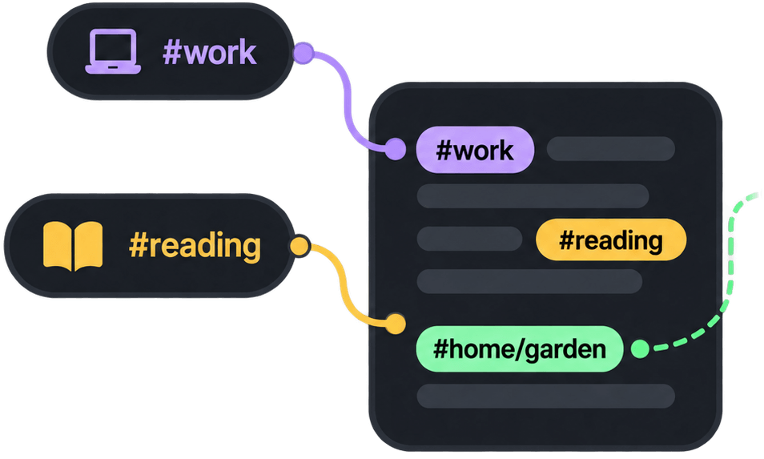
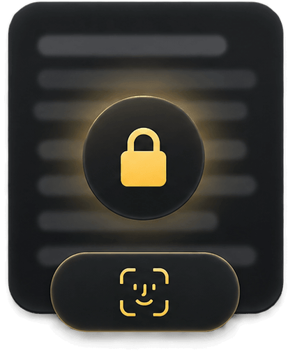
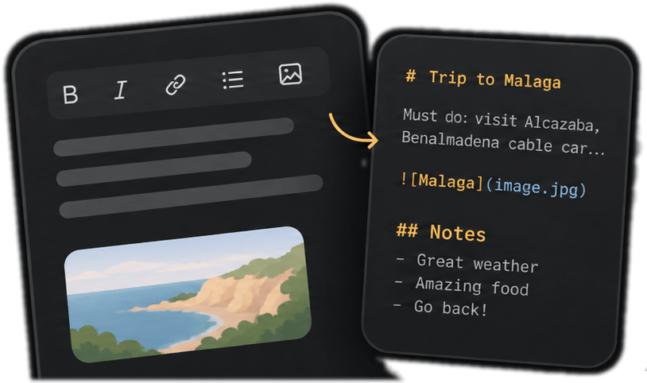
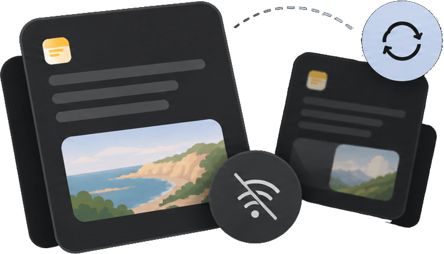

Full-text search
Search across titles and bodies, indexed and ranked — instant on the server and on your phone.
A single lightweight binary you can drop onto a Raspberry Pi or a cheap VPS.
Native mobile apps that work fully offline and sync whenever a connection is available.


Search across titles and bodies, indexed and ranked — instant on the server and on your phone.
Type a tag anywhere in a note. The sidebar lists them all, and tags nest with a slash.


The body is encrypted on your device with AES-256-GCM; the server never has the key. Titles stay readable, so lists and search still work. Unlock with a password, passkey or biometrics.
Create separate spaces to keep contexts apart: a journal, a side project, recipes...
Notes are stored as Markdown. Take them out whenever you want.

Native apps keep a full local copy and sync whenever you're back online.

Run it with Docker or download the single binary for your machine.
ghcr.io/cassiozen/notesd
Hosting guide →
Create your account on the server, before putting HTTPS in front and exposing it.
Account setup →Download the Android APK from Releases, or build the iPhone app, and connect it to your server.
Releases →Yes. Every note is stored as a Markdown document. You never see the syntax while writing, but it's what's saved and what you get out.
In SQLite files in the server's data directory, one per account. notesd export writes your notes
as Markdown files, or start the server with --mirror-dir to keep a folder of
.md files always up to date. Locked notes aren't exported by default; see the
docs.
On Android and iPhone, fully: every note lives on the phone. In the browser too, if you choose “Keep my notes on this device”. Everything syncs when the server is reachable again.
Nothing is lost. If one device changed the title and the other the text, both are kept. If both changed the text, the other version becomes a “Conflicted copy” linked to the original.
No. There are no analytics in the server or the apps. The server only contacts Resend to email a note and GitHub to check for releases, and only if you turn those on.
Regular notes are stored unencrypted on the server, like most notes apps. Locked notes are the exception: they're encrypted on your device and the server never has the key.
Yes. Each account gets its own database file with its own notes, spaces and pictures. Add people with
notesd add-user; there's no public sign-up.
Not yet. On Android, install the APK from Releases; updates install over it. On iPhone, build the app yourself with Xcode.
docker run -d -p 127.0.0.1:8080:8080 -v notesd-data:/data ghcr.io/cassiozen/notesd
Then create your account over SSH and put HTTPS in front. The Get started guide walks through it.